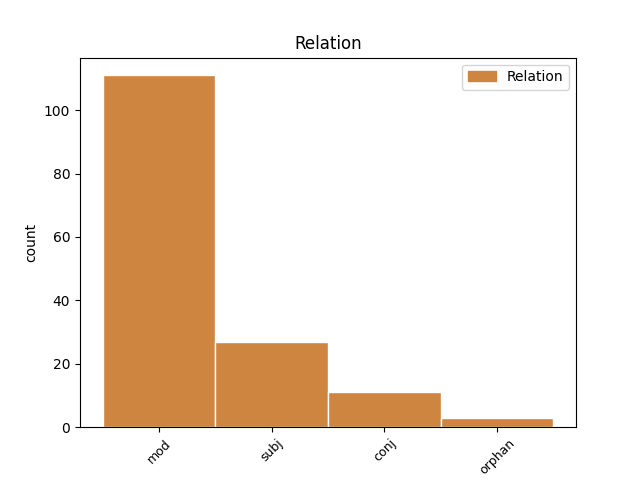
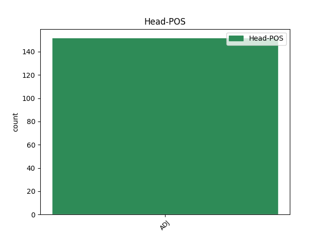
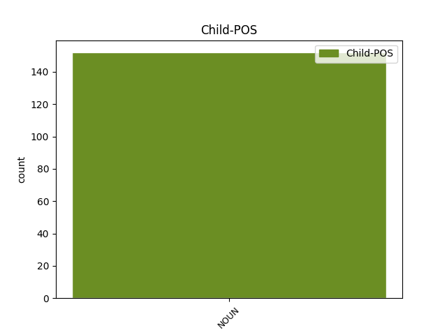

Distribution of features within this leaf



Agreement Rules sorted by frequency.
- When the dependent token is the modifer(mod) of the head token, and the head token is ADJ and the dependent token is NOUN.
1 guþ _ _ _ _ 0 _ _ _
2 andhaitand _ _ _ _ 0 _ _ _
3 kunnan _ _ _ _ 0 _ _ _
4 iþ _ _ _ _ 0 _ _ _
5 waurstwam _ _ _ _ 0 _ _ _
6 inwidand _ _ _ _ 0 _ _ _
7 andasetjai _ _ _ _ 0 _ _ _
8 wisandans _ _ _ _ 0 _ _ _
9 jah _ _ _ _ 0 _ _ _
10 ungalaubjandans _ _ _ _ 0 _ _ _
11 jah _ _ _ _ 0 _ _ _
12 du _ _ _ _ 0 _ _ _
13 allamma alls ADJ Px Case=Dat|Gender=Neut|Number=Sing 0 _ _ _
14 waurstwe waurstw NOUN Nb Case=Gen|Gender=Neut|Number=Plur 13 mod _ ref=TIT_1.16
15 godaize _ _ _ _ 0 _ _ _
16 uskusanai _ _ _ _ 0 _ _ _
1 aþþan _ _ _ _ 0 _ _ _
2 all _ _ _ _ 0 _ _ _
3 hrain _ _ _ _ 0 _ _ _
4 hrainjaim _ _ _ _ 0 _ _ _
5 iþ _ _ _ _ 0 _ _ _
6 bisaulidaim _ _ _ _ 0 _ _ _
7 jah _ _ _ _ 0 _ _ _
8 ungalaubjandam _ _ _ _ 0 _ _ _
9 ni _ _ _ _ 0 _ _ _
10 waiht waiht NOUN Nb Case=Nom|Gender=Neut|Number=Sing 11 subj _ ref=TIT_1.15
11 hrain hrains ADJ A- Case=Nom|Degree=Pos|Gender=Neut|Number=Sing|Strength=Strong 0 _ _ _
12 ak _ _ _ _ 0 _ _ _
13 bisaulida _ _ _ _ 0 _ _ _
14 sind _ _ _ _ 0 _ _ _
15 ize _ _ _ _ 0 _ _ _
16 jah _ _ _ _ 0 _ _ _
17 aha _ _ _ _ 0 _ _ _
18 jah _ _ _ _ 0 _ _ _
19 miþwissei _ _ _ _ 0 _ _ _
1 skal _ _ _ _ 0 _ _ _
2 uþ _ _ _ _ 0 _ _ _
3 þan _ _ _ _ 0 _ _ _
4 aipiskaupus _ _ _ _ 0 _ _ _
5 ungafairinoþs _ _ _ _ 0 _ _ _
6 wisan _ _ _ _ 0 _ _ _
7 swe _ _ _ _ 0 _ _ _
8 gudis _ _ _ _ 0 _ _ _
9 fauragaggja _ _ _ _ 0 _ _ _
10 ni _ _ _ _ 0 _ _ _
11 hauhhairts _ _ _ _ 0 _ _ _
12 ni _ _ _ _ 0 _ _ _
13 þwairhs _ _ _ _ 0 _ _ _
14 ni _ _ _ _ 0 _ _ _
15 weinnas weinnas ADJ A- Case=Nom|Degree=Pos|Gender=Masc|Number=Sing|Strength=Strong 0 _ _ _
16 ni _ _ _ _ 0 _ _ _
17 slahals slahals NOUN Nb Case=Nom|Gender=Masc|Number=Sing 15 conj _ ref=TIT_1.7
18 ni _ _ _ _ 0 _ _ _
19 aglaitgastalds _ _ _ _ 0 _ _ _
20 ak _ _ _ _ 0 _ _ _
21 gastigods _ _ _ _ 0 _ _ _
22 bleiþs _ _ _ _ 0 _ _ _
23 andaþahts _ _ _ _ 0 _ _ _
24 garaihts _ _ _ _ 0 _ _ _
25 weihs _ _ _ _ 0 _ _ _
26 gaþaurbs _ _ _ _ 0 _ _ _
27 waurdis _ _ _ _ 0 _ _ _
28 triggws _ _ _ _ 0 _ _ _
29 ei _ _ _ _ 0 _ _ _
30 mahteigs _ _ _ _ 0 _ _ _
31 sijai _ _ _ _ 0 _ _ _
32 jah _ _ _ _ 0 _ _ _
33 gaþlaihan _ _ _ _ 0 _ _ _
34 in _ _ _ _ 0 _ _ _
35 laiseinai _ _ _ _ 0 _ _ _
36 hailai _ _ _ _ 0 _ _ _
37 jaþ _ _ _ _ 0 _ _ _
38 þans _ _ _ _ 0 _ _ _
39 andstandandans _ _ _ _ 0 _ _ _
40 gasakan _ _ _ _ 0 _ _ _
1 jah _ _ _ _ 0 _ _ _
2 silba _ _ _ _ 0 _ _ _
3 gaf _ _ _ _ 0 _ _ _
4 sumans _ _ _ _ 0 _ _ _
5 apaustauluns _ _ _ _ 0 _ _ _
6 sumanz _ _ _ _ 0 _ _ _
7 uþ _ _ _ _ 0 _ _ _
8 þan _ _ _ _ 0 _ _ _
9 praufetuns _ _ _ _ 0 _ _ _
10 sumans _ _ _ _ 0 _ _ _
11 uþ _ _ _ _ 0 _ _ _
12 þan _ _ _ _ 0 _ _ _
13 aiwaggelistans _ _ _ _ 0 _ _ _
14 sumans sums ADJ Px Case=Acc|Gender=Masc|Number=Plur 0 _ _ _
15 uþ _ _ _ _ 0 _ _ _
16 þan _ _ _ _ 0 _ _ _
17 hairdjans hairdeis NOUN Nb Case=Acc|Gender=Masc|Number=Plur 14 orphan _ ref=EPH_4.11
18 jah _ _ _ _ 0 _ _ _
19 laisarjans _ _ _ _ 0 _ _ _
20 du _ _ _ _ 0 _ _ _
21 ustauhtai _ _ _ _ 0 _ _ _
22 weihaize _ _ _ _ 0 _ _ _
23 du _ _ _ _ 0 _ _ _
24 waurstwa _ _ _ _ 0 _ _ _
25 andbahtjis _ _ _ _ 0 _ _ _
26 du _ _ _ _ 0 _ _ _
27 timreinai _ _ _ _ 0 _ _ _
28 leikis _ _ _ _ 0 _ _ _
29 Xristaus _ _ _ _ 0 _ _ _
30 unte _ _ _ _ 0 _ _ _
31 garinnaima _ _ _ _ 0 _ _ _
32 allai _ _ _ _ 0 _ _ _
33 in _ _ _ _ 0 _ _ _
34 ainamundiþa _ _ _ _ 0 _ _ _
35 galaubeinais _ _ _ _ 0 _ _ _
36 jah _ _ _ _ 0 _ _ _
37 ufkunþjis _ _ _ _ 0 _ _ _
38 sunus _ _ _ _ 0 _ _ _
39 gudis _ _ _ _ 0 _ _ _
40 du _ _ _ _ 0 _ _ _
41 waira _ _ _ _ 0 _ _ _
42 fullamma _ _ _ _ 0 _ _ _
43 in _ _ _ _ 0 _ _ _
44 mitaþ _ _ _ _ 0 _ _ _
45 wahstaus _ _ _ _ 0 _ _ _
46 fullons _ _ _ _ 0 _ _ _
47 Xristaus _ _ _ _ 0 _ _ _
48 ei _ _ _ _ 0 _ _ _
49 þanaseiþs _ _ _ _ 0 _ _ _
50 ni _ _ _ _ 0 _ _ _
51 sijaima _ _ _ _ 0 _ _ _
52 niuklahai _ _ _ _ 0 _ _ _
53 uswagidai _ _ _ _ 0 _ _ _
54 jah _ _ _ _ 0 _ _ _
55 uswalugidai _ _ _ _ 0 _ _ _
56 winda _ _ _ _ 0 _ _ _
57 ƕammeh _ _ _ _ 0 _ _ _
58 laiseinais _ _ _ _ 0 _ _ _
59 liutein _ _ _ _ 0 _ _ _
60 manne _ _ _ _ 0 _ _ _
61 in _ _ _ _ 0 _ _ _
62 filudeisein _ _ _ _ 0 _ _ _
63 du _ _ _ _ 0 _ _ _
64 listeigon _ _ _ _ 0 _ _ _
65 uswandjai _ _ _ _ 0 _ _ _
66 airzeins _ _ _ _ 0 _ _ _
67 iþ _ _ _ _ 0 _ _ _
68 sunja _ _ _ _ 0 _ _ _
69 taujandans _ _ _ _ 0 _ _ _
70 in _ _ _ _ 0 _ _ _
71 frijaþwai _ _ _ _ 0 _ _ _
72 wahsjaima _ _ _ _ 0 _ _ _
73 in _ _ _ _ 0 _ _ _
74 ina _ _ _ _ 0 _ _ _
75 þo _ _ _ _ 0 _ _ _
76 alla _ _ _ _ 0 _ _ _
77 ize _ _ _ _ 0 _ _ _
78 ist _ _ _ _ 0 _ _ _
79 haubiþ _ _ _ _ 0 _ _ _
80 Xristus _ _ _ _ 0 _ _ _
81 us _ _ _ _ 0 _ _ _
82 þammei _ _ _ _ 0 _ _ _
83 all _ _ _ _ 0 _ _ _
84 leik _ _ _ _ 0 _ _ _
85 gagatiloþ _ _ _ _ 0 _ _ _
86 jah _ _ _ _ 0 _ _ _
87 gagahaftiþ _ _ _ _ 0 _ _ _
88 þairh _ _ _ _ 0 _ _ _
89 allos _ _ _ _ 0 _ _ _
90 gawissins _ _ _ _ 0 _ _ _
91 andstaldis _ _ _ _ 0 _ _ _
92 bi _ _ _ _ 0 _ _ _
93 waurstwa _ _ _ _ 0 _ _ _
94 in _ _ _ _ 0 _ _ _
95 mitaþ _ _ _ _ 0 _ _ _
96 ana _ _ _ _ 0 _ _ _
97 ainƕarjoh _ _ _ _ 0 _ _ _
98 fero _ _ _ _ 0 _ _ _
99 uswahst _ _ _ _ 0 _ _ _
100 leikis _ _ _ _ 0 _ _ _
101 taujiþ _ _ _ _ 0 _ _ _
102 du _ _ _ _ 0 _ _ _
103 timreinai _ _ _ _ 0 _ _ _
104 seinai _ _ _ _ 0 _ _ _
105 in _ _ _ _ 0 _ _ _
106 frijaþwai _ _ _ _ 0 _ _ _
Disagree Examples:
1 ibai _ _ _ _ 0 _ _ _
2 magun _ _ _ _ 0 _ _ _
3 sunjus _ _ _ _ 0 _ _ _
4 bruþfadis _ _ _ _ 0 _ _ _
5 qainon _ _ _ _ 0 _ _ _
6 und _ _ _ _ 0 _ _ _
7 þata sa ADJ Pd Case=Acc|Gender=Neut|Number=Sing 0 _ _ _
8 ƕeilos ƕeila NOUN Nb Case=Gen|Gender=Fem|Number=Sing 7 mod _ ref=MATT_9.15
9 þei _ _ _ _ 0 _ _ _
10 miþ _ _ _ _ 0 _ _ _
11 im _ _ _ _ 0 _ _ _
12 ist _ _ _ _ 0 _ _ _
13 bruþfaþs _ _ _ _ 0 _ _ _
1 At _ _ _ _ 0 _ _ _
2 maurgin _ _ _ _ 0 _ _ _
3 þan _ _ _ _ 0 _ _ _
4 waurþanana _ _ _ _ 0 _ _ _
5 runa _ _ _ _ 0 _ _ _
6 nemun _ _ _ _ 0 _ _ _
7 allai _ _ _ _ 0 _ _ _
8 gudjans _ _ _ _ 0 _ _ _
9 jah _ _ _ _ 0 _ _ _
10 þai _ _ _ _ 0 _ _ _
11 sinistans sineigs ADJ A- Case=Nom|Degree=Sup|Gender=Masc|Number=Plur|Strength=Weak 0 _ _ _
12 manageins managei NOUN Nb Case=Gen|Gender=Fem|Number=Sing 11 mod _ ref=MATT_27.1
13 bi _ _ _ _ 0 _ _ _
14 Iesu _ _ _ _ 0 _ _ _
15 ei _ _ _ _ 0 _ _ _
16 afdauþidedeina _ _ _ _ 0 _ _ _
17 ina _ _ _ _ 0 _ _ _
1 jah _ _ _ _ 0 _ _ _
2 all alls ADJ Px Case=Nom|Gender=Neut|Number=Sing 0 _ _ _
3 manageins managei NOUN Nb Case=Gen|Gender=Fem|Number=Sing 2 mod _ ref=MARK_2.13
4 iddjedun _ _ _ _ 0 _ _ _
5 du _ _ _ _ 0 _ _ _
6 imma _ _ _ _ 0 _ _ _
1 jah _ _ _ _ 0 _ _ _
2 bokarjos _ _ _ _ 0 _ _ _
3 þai _ _ _ _ 0 _ _ _
4 af _ _ _ _ 0 _ _ _
5 Iairusaulwmai _ _ _ _ 0 _ _ _
6 qimandans _ _ _ _ 0 _ _ _
7 qeþun _ _ _ _ 0 _ _ _
8 þatei _ _ _ _ 0 _ _ _
9 Baiailzaibul _ _ _ _ 0 _ _ _
10 habaiþ _ _ _ _ 0 _ _ _
11 jah _ _ _ _ 0 _ _ _
12 þatei _ _ _ _ 0 _ _ _
13 in _ _ _ _ 0 _ _ _
14 þamma _ _ _ _ 0 _ _ _
15 reikistin reikeis* ADJ A- Case=Dat|Degree=Sup|Gender=Masc|Number=Sing|Strength=Weak 0 _ _ _
16 unhulþono unhulþo NOUN Nb Case=Gen|Gender=Fem|Number=Plur 15 mod _ ref=MARK_3.22
17 uswairpiþ _ _ _ _ 0 _ _ _
18 þaim _ _ _ _ 0 _ _ _
19 unhulþom _ _ _ _ 0 _ _ _
1 amen _ _ _ _ 0 _ _ _
2 qiþa _ _ _ _ 0 _ _ _
3 izwis _ _ _ _ 0 _ _ _
4 þatei _ _ _ _ 0 _ _ _
5 allata _ _ _ _ 0 _ _ _
6 afletada _ _ _ _ 0 _ _ _
7 þata sa ADJ Pd Case=Nom|Gender=Neut|Number=Sing 0 _ _ _
8 frawaurhte frawaurhts NOUN Nb Case=Gen|Gender=Fem|Number=Plur 7 mod _ ref=MARK_3.28
9 sunum _ _ _ _ 0 _ _ _
10 manne _ _ _ _ 0 _ _ _
11 jah _ _ _ _ 0 _ _ _
12 naiteinos _ _ _ _ 0 _ _ _
13 swa _ _ _ _ 0 _ _ _
14 managos _ _ _ _ 0 _ _ _
15 swaswe _ _ _ _ 0 _ _ _
16 wajamerjand _ _ _ _ 0 _ _ _